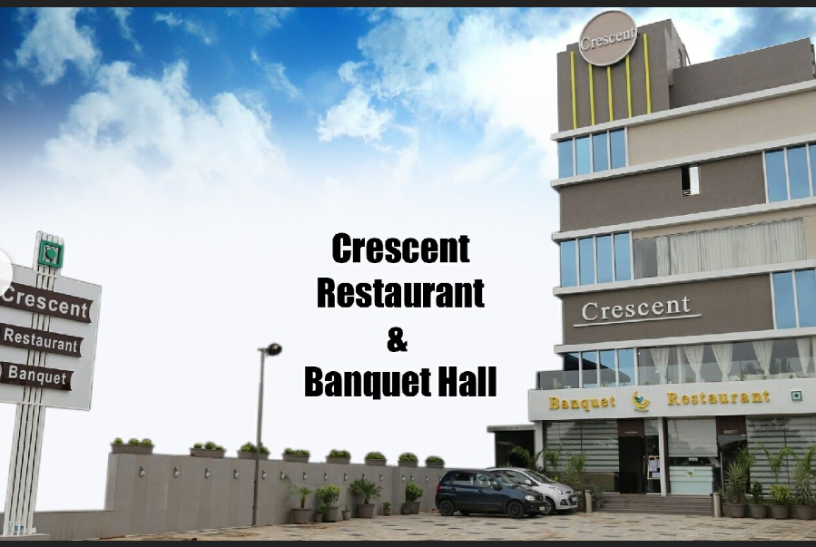

Crescent Restaurant in Chennai is a beloved, budget-friendly eatery known for its authentic, flavorful South Indian, especially Keralite, cuisine, offering popular dishes like fish curries, crispy parottas, fluffy appams, biriyanis, and combos, making it a go-to spot for locals seeking traditional tastes in a simple setting, though sometimes busy with long waits.